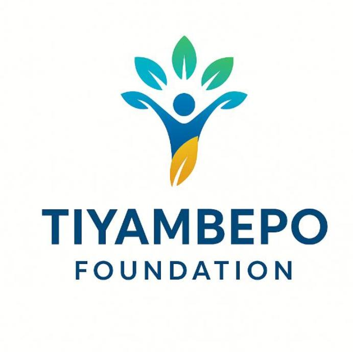

Usisya, Nkhata Bay North — hard to reach. Where others stop, we stay.
Tiyambepo Foundation Limited is Malawi's last mile retention partner — keeping academically promising girls in hard to reach areas in school until completion.
Community initiative since 2022, incorporated 13 May 2026 as Company Limited by Guarantee, NGORA compliant. Focus: Usisya, Nkhata Bay North.
Rooted in community trust: Founder's prior community facilitation — supporting the Beit Trust double classroom block at Usisya CDSS as a community member, and joining FAWEMA Nkhata Bay Chapter as a male champion for girls' education — built the relationships and verification model that now guides the Foundation's retention work. These were personal community contributions before the Foundation, not Foundation projects, but they show our last mile presence.
Full package — fees, uniform, self-boarding near school, meals, textbooks, transport, dignity kit, welfare. No cash to child — direct to school or supplier.
Start 2026-27: 5 learners (3 girls, 2 boys) = 60% girls minimum. Verified: academic report + home visit (2 persons, 1 female for girls, chief present) + chief letter with stamp & phone + locked file + photo consent.
For schools where our girls learn — desks, girls WASH changing room, solar light for evening study. No new classroom block in Year 1 — we use existing.
Upkeep support, mentorship, leadership circle, scholarship linkages. Resource centre plan for self-reliance — funds future girls.
Tiyambepo Foundation Limited — Usisya, Nkhata Bay North (hard to reach)
📞 Phone/WhatsApp: 0881 184 173
✉️ Email: info.tiyambepofoundation@gmail.com
📍 Village, GVH, T/A Fukamapiri, Nkhata Bay District
NGORA compliant • Child safeguarding zero tolerance • Finance register open for audit